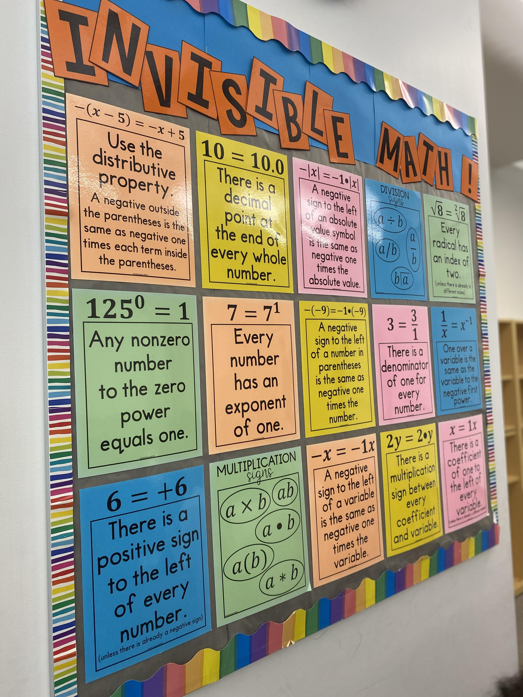

Math is a subject known for the number of students that dislike it. It has been storied as being boring, as well as challenging. This is, however, not limited to mathematics. There are many students who dislike reading, or history, or gym. Math is just another subject. A class should be challenging, or it is not a class but a event, with no purpose and no lesson, like a school dance or promotion. The only value to an easy class is a morale-boost. A core subject should not raise self-esteem, or one's grade, because a grade is a means to an end. A core subject should prepare. Even if a grade lowers, one will still learn. The challenge of any subject is there because it is needed to teach, not for edutainment. Even the best of students will eventually grow bored, and this is inevitable. An extra class would only keep them this way for a short hour or so, and this would happen with either choice. If you can't avoid it, make it a benefit.
The hardships within mathematics: a boon or a blessing?
Sports has many cons, but few pros, so first, the pros. Sports have an amount of strategy, and can reduce the risk of contracting diseases. they have some physical benefits as well. But, athletics are tiring, players can be belittling, and physical activity causes physical pain. Sweat is uncomfortable, running increases the need to breathe, and equipment is heavy. Sports have health benefits, sure, but they also have a great risk of injury. There may be a risk of getting impacted by a projectile, downed by a fist. Allergens and allergies are another thorn in the side of physical exertion. Most sports are "enjoyed" outside, where dogs and cats roam the streets and pollen reigns supreme. Asthma, though not an allergy, can also be worsened by running, or dust, or pollen. This is without mentioning the mental impacts of participating in athletics. Many games involve some competitive mechanic. This will encourage players to strive towards a "victory", to be sadistic and enjoy others' loss. Competition also leads to the abuse of the less physically-able. Physical activity might help lose weight, but it will also lead to a loss of self-esteem.

The competition of sports: a benefit or a flaw?
https://www.cdc.gov/physicalactivity/basics/pa-health/index.htm